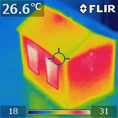
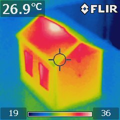
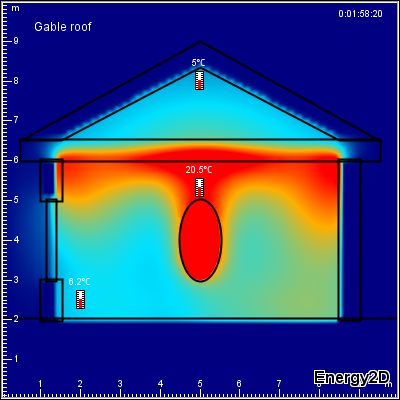
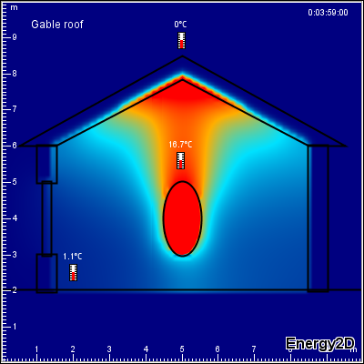
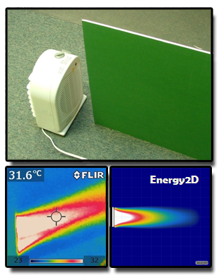

Energy2D is an interactive, visual simulation program that models all three mechanisms of heat transfer—conduction, convection, and radiation. Students can use it as an inquiry tool to explore and investigate heat and mass flows in two-dimensional structures under different environmental conditions such as sunlight and wind. Work is underway to incorporate other types of energy transformations to make it more general and to provide sensor interfaces for creating mixed-reality applications. Energy2D may be useful in teaching energy concepts in Earth science, physics, and engineering.
How to run Energy2D?
Energy2D runs with any web browser on Windows (XP, Vista, and Windows 7), Mac OS X, and Linux, provided that Java (Version 5 or higher) is installed and enabled. In addition, Energy2D can be used as a standalone application for creating energy simulations. Your simulations can be deployed as Java applets that run within a browser or—in the future—as Android apps that run on smartphones and tablets.
|  |  |
| An IR image of a heated model house with a ceiling | An IR image of a heated model house without a ceiling |
|  |  |
| An Energy2D simulation of a heated house with a ceiling | An Energy2D simulation of a heated house without a ceiling |
|  | |
| Comparing Energy2D simulation and IR image of forced convection. | |
How well does Energy2D simulate the real world?
The conduction part of Energy2D is highly accurate, but the convection and radiation parts are not 100% accurate. Hence, in cases
that involve convection and radiation, Energy2D results should be considered qualitative. Qualitative results, however, may be good
enough to convey the ideas in many educational settings.
The first set pictures to the right show a comparison of the results of Energy2D simulations with images from infrared (IR)
thermography for
a simple house. The thermal patterns predicted by Energy2D closely match those from an infrared imager.
The second set of image shows a similarity between an Energy2D simulation and an IR image of forced
convection.